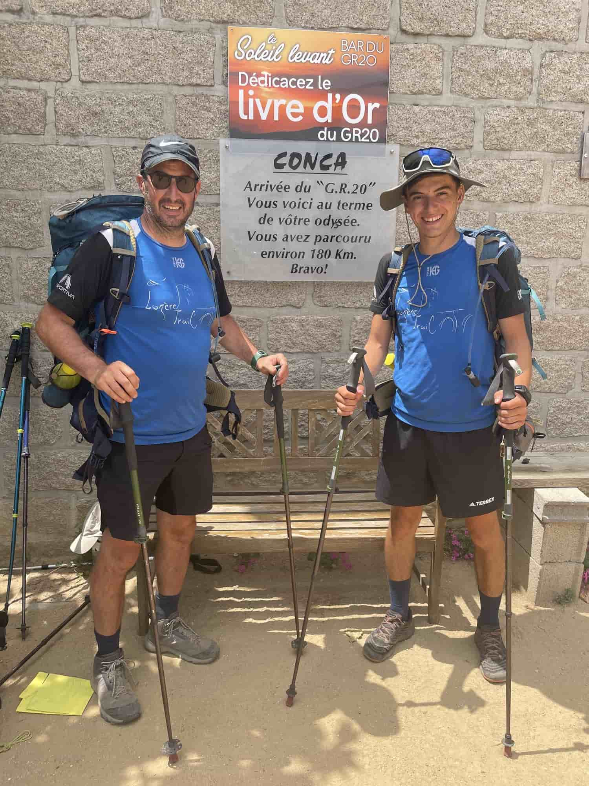
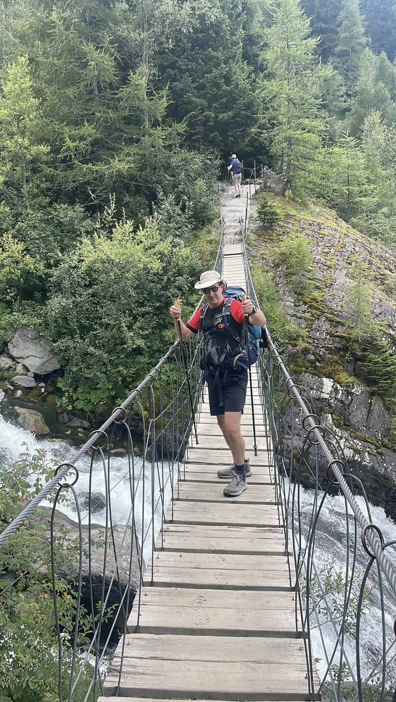

En bivouac
Treks
Retrouvez tous les treks que j’ai pu réaliser, seul ou en bonne compagnie, racontés jour par jour avec photos, matériel et budget.

Corse
Le GR20 en 13 jours
Mon expérience sur le GR20 en bivouac du nord au sud avec mon papa.
Lire le récit →
Alpes
Le Tour du Mont-Blanc en 9 jours
Mon expérience sur le Tour du Mont-Blanc en bivouac avec mon papa : 170 km, 10 000 m D+.
Lire le récit →
Pyrénées
Tour des vallées de Cauterets en 4 jours
Un petit trek de 4 jours, idéal pour découvrir le trek. Je l’ai fait avec ma copine pour qu’elle découvre, et elle a adoré !
Lire le récit →